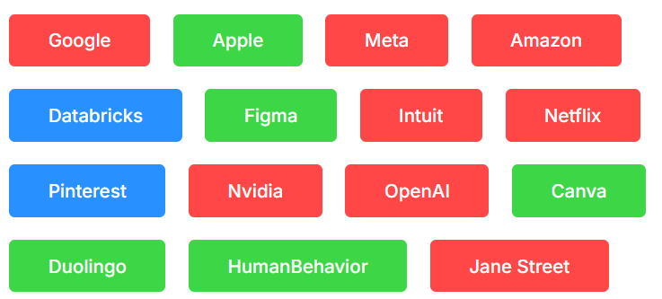
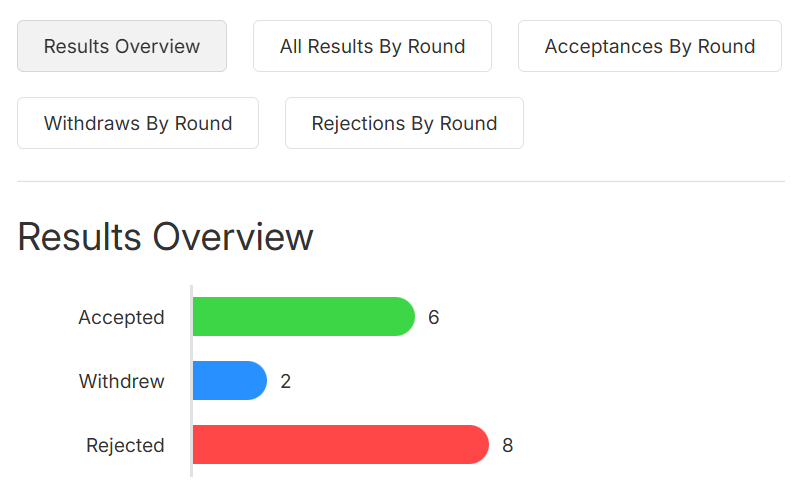

Workbit's dashboard shows you a condensed summary of all your applications and their result, along with quick tools to filter and sort through them.

📈 Statistical Analysis
Workbit automatically computes key statistics based on your job applications and displays them in a customizable chart terminal, allowing you to see your progress.

📖 Detailed Stories
Each application has its own story behind it. Workbit allows you to track every stage and exactly what happened to each app, giving you insights for your future search.